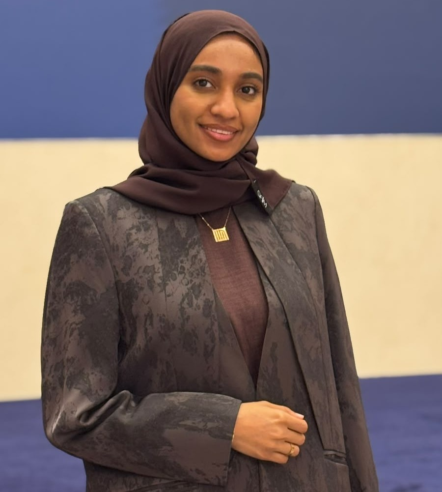

- Video Editing
- Graphic Design
- Social Media Management
- Public Relations
- Translation
- Event Coordination
- Adobe InDesign
- Canva
- CapCut
- AI Filmmaking

About me
Hi, My name is Amna, I am a Mass Communication and Public Relations graduate from Ahlia University, passionate about media, creative video editer, and cross-cultural communication. I have experience in content creation, photography, videography, graphic design, and public relations. I enjoy learning new skills such as Ai film making and using building projects with HTML and CSS.
Skills
Projects
The Cultural Bridge Between Japan and Bahrain documentary
A documentary exploring the Japanese community in Bahrain and the cultural connections between Japan and Bahrain, through interviews, filming, and storytelling.
The Creative Team
Co-founded a creative media project delivering event coverage, photography, videography, video editing, and creative content, including coverage for the Bahrain Association for Small & Medium Enterprises.
Ahlia Podcast
I had the opportunity to be involved in Ahlia Podcast, where I contributed to media production and content creation. This experience allowed me to strengthen my communication, teamwork, and creative skills.
Contacts
Hidd, Muharraq, bahrain
Email: arradamna@gmail.com
Linkedin: Amna Arrad
GitHub: github.com/amna-dev